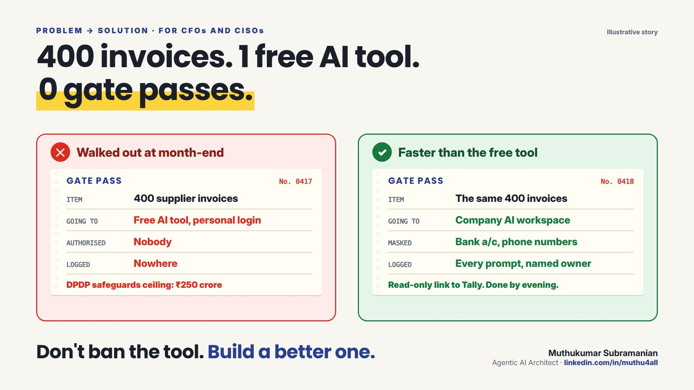

Your Accountant Pasted 400 Invoices into a Free AI Tool. Who Answers for It?
By Muthukumar Subramanian · Agentic AI Architect

Every office in India has a security guard who won't let a chair leave the building without a gate pass.
Last Thursday, 400 supplier invoices walked out past that same guard. No pass. No one noticed.
Here's how. It's month-end. Your accountant has two days to reconcile a mountain of bills against Tally. The ERP vendor's "AI module" is still in procurement. So out comes a personal login, and the invoices go into a free AI tool: GSTINs, bank account numbers, names, amounts. By evening the work is done. It's good work, too.
(That's an illustrative story. I'd be surprised if some version of it didn't happen in your company this month.)
Let's be clear about one thing: the accountant isn't the villain. They had a deadline and you gave them nothing better. They did what a good employee does. They found a way.
The question is what happens next, and who answers for it.
The problem: shadow AI
MIT's GenAI Divide study found workers at over 90% of companies using personal AI tools for work, while only about 40% of those companies had bought an official subscription. It's a preliminary, self-reported study, so don't treat it as a census. But the gap rings true. Your people have already adopted AI. Your company just hasn't noticed.
And it's moved past copy-paste. Some of your sharpest staff have built their own small agents, wired to Tally or the ERP with their own login. A chat window forgets. An agent keeps the connection, runs every night, and has no owner on any list. When that person resigns, who switches it off?
Is this a data breach? Honestly, not automatically. It depends on what's in the invoices, what the tool's terms say and what happens to the data. But that's exactly the problem. Ask your company tomorrow where those 400 invoices went, and it can't answer.
India's numbers should get a CFO's attention. IBM's 2026 report puts the average cost of a data breach in India at ₹25.5 crore, with shadow AI among the top three cost drivers, adding about ₹1.79 crore on average. Under the DPDP Rules, notified in November 2025, the main duties start on 13 May 2027. The ceiling for failing to keep reasonable security safeguards is ₹250 crore.
The law won't ask which accountant did it. It'll ask what the company did.
👉 [IMAGE: B-day07-2-in-article-three-routes.png]
Caption: Three routes out of accounts. Only one has a gate pass.
The solution: make the safe way the easy way
You can't ban your way out of this. Block the site and the work moves to a personal phone, where you see even less.
People don't use shadow AI because they love risk. They use it because it's faster. So the sanctioned option has to be faster still:
→ Start with an amnesty. Ask what people are using, and don't punish anyone for the answer. You can't secure what nobody will admit to.
→ Give them a company AI workspace. Company login, business terms that say your data isn't used for training, and it's ready before month-end, not after a six-month procurement.
→ Connect it to Tally and the ERP, read-only. That's the part free tools can't do, and it's why people will switch.
→ Mask what doesn't need to go. Bank account numbers and phone numbers are stripped before a prompt leaves.
→ Keep a log and name an owner for every agent, so it survives the person who built it.
Here's the part most companies skip. Don't design this workspace in a conference room. Put a forward deployed engineer (FDE) in the finance team for two weeks: an engineer who sits with the customer's team and ships the agent on their real systems. Inside a company, that's the same job with an internal customer. They'll watch how the accountant really works, including the Excel sheet nobody documented, and build around that. Next to them, a context engineer decides what data the agent may see. Those titles are still settling, but the work isn't optional.
👉 [GIF: B-day07-4-in-article-at-the-gate.gif]
Caption: The same 400 invoices, two routes. One leaves no trail. The other gets masked and logged.
👉 [IMAGE: B-day07-3-in-article-gate-pass-checklist.png]
Caption: A gate pass for any AI tool. Fail one line and it doesn't leave the building.
The hard parts
→ It costs money. Paid seats for a finance team are a real budget line. Compare them with the ₹1.79 crore, not with zero.
→ Personal phones stay a blind spot. No tool sees everything. A better option does more than a stricter policy.
→ Masking can hurt answers. Mask too much and the reconciliation stops working. That's why someone has to sit with the team and tune it.
→ Vendor terms change. Someone has to reread them, and own that job.
→ Reading isn't the end. The day the agent writes back to Tally, you need approval limits and an audit trail.
The opportunity
→ For CFOs and CISOs: this is cheaper to fix before a breach than after it. Name one owner this quarter.
→ For founders: AI workspaces built for Indian finance teams, with Tally and GST built in, priced per seat in rupees.
→ For integrators and IT services firms: a fixed-price package: shadow AI discovery, a sanctioned workspace, and an FDE embedded in finance for a month.
→ For accountants and finance people: if you've already built something clever, you may be your company's first context engineer. Say so, out loud.
Your turn 👇
Your staff are using free AI tools. Ban them or give them something better? Pick one.
Tag the CFO who still thinks nobody in accounts uses ChatGPT.